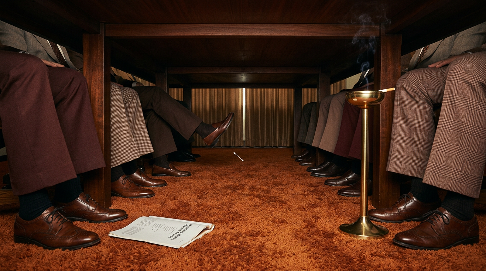

Why Do Q-Tips Say Not to Put Them in Your Ears?
Over Forty, Out of Tricks, and Cheating on My Sex Life With a Two-Cent Stick the Company Begs Me Not to Use
Let me open with a confession, because the Catholics got one thing right. It’s cheaper than therapy and the lighting is better. Plus the priest is more in tune than your dad, whose only response to an issue, mid-eighties, was “don’t be a pu%%y.”
I’m in my forties. And to quote a comedian, since I love those, “it’s just decay management from here on out.”
And somewhere around that birthday, the old machinery started filing paperwork for early retirement, and doing it with a whimsy it hardly needed. What did it for me at twenty-five, a stiff breeze, a lingerie catalog left face-up in a dentist’s waiting room, the word “Tuesday,” no longer does it at forty-something. My twenties were a vending machine. My forties are a vending machine in a bus terminal in Asunción that only takes exact change, in a currency they discontinued in 1991, and it’s out of everything except the Funyuns.
Robin Williams covered this territory in Weapons of Self Destruction, his 2009 HBO special, taped when he was 58. I’d been carrying a version of it around in my brain pan for years, with a trampoline and a candle and my own furniture rearranged in it. I went back and checked. My memory had cleaned it up. The real one is worse. There are pubes on fire, an army helmet and sooo MUCH MORE, and better, and it ends on the most honest six words ever said about a man’s plumbing: “That might work. I don’t know.”
Don’t take my word for it. Take his.
The bit starts around the 1:21:00 mark. Watch it on YouTube if the player doesn’t load.
My brain added a trampoline. His needed a couch and a fire extinguisher. Neither of us is getting what he paid for.
Why am I telling you this? Because I’m driving, you’re in the passenger seat, and the child locks are on, sweetheart. So buckle up and, to quote my dad, who once asked me if I was having a midlife crisis because I told him “I love you”... “don’t be a pu%%y.” There’s a Big Gulp in the cupholder. Don’t drink it. It isn’t soda. And damn it, don’t put it near a fire.
So.
The bathroom. Me, the mirror, and the fluorescent tube that makes every man look like a witness in a cartel trial. In my hand, a cotton swab, and I’m using it for exactly what it was made for.
Hitting the spot.
You know the spot. Every one of us has one. It lives deep in the lughole, past where the cartography goes vague, out where the old maps just say HERE BE CERUMEN. You find it, the swab does one slow pirouette, and the leg goes. Not a decision. A reflex. The knee jerks like a Pentecostal at the altar call and for one shining second you understand why people join cults. We all have that g-spot. It’s akin to touching God’s face.
We are all guilty. Don’t look at me like that. You did it this morning, and you did it with the bathroom door locked, which tells me everything I need to know about your conscience.
And there I am, mid-pirouette, when I make the mistake that ruins everything.
I read the box.
Nowhere on This Box Does It Say “Ears”
Here’s what Q-tips would like you to use their product for. I’m going off the box in my hand and the brand’s own copy on every drugstore site in America, because I’m a professional.
Beauty. Applying and removing eyeliner, touching up nail polish, lip liner, the whole contouring liturgy.
First aid. Gently applying ointments and creams. Picture it. You’re bleeding out on the bathroom tile, a bread knife situation, a mandoline incident, and the first thing your trembling hand finds in the medicine cabinet is a Q-tip. Not the towel. Not the tourniquet. Not 911. A stick with fluff on it. You dab a little Neosporin on the femoral artery and wait for the cavalry.
Makeup, again, for emphasis. I have seen my wife put on her face. She does her cheeks with brushes that would make Leonardo set down the Mona Lisa and ask where she shops. Nobody in this marriage is applying blush with a Q-tip. Nobody in any marriage is. If your spouse is contouring with a cotton swab, that’s not a beauty routine, that’s a hostage signal.
And, I kid you not, cleaning your computer keyboard.
It gets better online. The full current list, per the product pages: pet care, car detailing, model building, cleaning collectibles, painting, dusting air vents, clearing out phone ports, and, my personal favorite, protecting yourself from battery corrosion on motherboards and hard drives.
Battery corrosion on motherboards. Battery... That’s the jolt we feel when we play with them. Like sticking our tongues on a 9-volt for thrills.
Who is this for? Who is out there at three in the morning, sweating, motherboard corroding, the Feds circling the block, reaching into the medicine cabinet past the Advil for the swabs? That’s not a customer. That’s a guy in a Tim Dorsey novel who’s about to put a Q-tip somewhere a Q-tip has no business going, and it’s a hard drive, and then it’s a state trooper.
And there it is, the whole thing, sitting in my palm.
Q-tips is the perfect brand. It sells a product for anything, everything, except the one thing every single human being buys it for.
And THEY KNOW IT. They f-ing know it. And God bless them for it.
Nobody in that building is sitting in the Monday meeting going, “Well, Brian, the quarterlies are in, and we made a bundle. Must be all those dusty keyboards.” Nobody is toasting the motherboard demographic. NO. They’re drawing the drapes, chilling the ether, and going full gonzo on the one product in the bathroom that’s wired straight to your central nervous system. They are kneeling in front of an altar blowing kisses to an Elder God made out of earwax, and shunning all the other Lovecraftian beings because they don’t have the golden stuff.
The Only Product in America That Begs You Not to Use It
I’m not the first person to notice. The Washington Post noticed in 2016, in a piece arguing that Q-tips may be the only major consumer product whose main use is exactly the one the manufacturer warns you against. Plenty of things get used wrong. Phone books level tables. Newspapers start fires. Coffee tables hold feet. But nobody prints DO NOT LEVEL TABLES on the Yellow Pages and then sells ninety percent of them to people with wobbly tables.
Every box carries the warning: don’t insert the swab into the ear canal. Outer ear only, gently, like you’re dusting a Fabergé egg that owes you money.
The brand’s current line, given to CNN in 2022, is that 80% of consumers use Q-tips for something other than personal care.
Eighty percent.
Sure, Brian. Eighty percent of America is out there detailing the cup holders of a ’98 Camry. Eighty percent of America builds model ships. I’ve met America. America has never built a model ship. America has never dusted an air vent in its life. America has one hand on the sink and one leg in the air.
Somebody Closed the Drapes in 1970-Something

Here’s the question that sent me down the rabbit hole with a flashlight and a cotton swab between my teeth.
When did it change? Was it always like this?
My theory, going in: mid-eighties. Some doofus in a Members Only jacket goes too far. Gets ambitious. Pushes past the spot, past the eardrum, past all reason, until the swab taps something sacred and he starts tasting colors and speaking in tongues and calling his mother by her government name. Lawyers get involved. Warning goes on the box.
Wrong decade. Better story.
For the first half-century, Q-tips didn’t warn you about ears. Q-tips sold you ears. According to CNN’s digging, from the 1920s onward ear care was central to the marketing. Mid-century ads showed men and women swabbing their own ears, swabbing their babies’ ears, one guy clearing pool water out after a swim. Old boxes printed “adult ear care” right there as a main use. Betty White, America’s grandmother, the woman who could sell holy water to a vampire, did television spots in the ’70s and ’80s pitching them as gentle on your eyes, your nose and your ears.
Then, sometime in the 1970s, under the brand’s old owner, Chesebrough-Pond’s, the warning appears.
And here’s the part that rearranged the noggin furniture and then made itself a sandwich in the kitchen.
Nobody knows why.
When the Washington Post went looking in 1990, the company told them it had no records of the reason, and the paper couldn’t turn up a single publicized case of anyone driving a swab into their brain. Their conclusion, paraphrased: something must have happened, and the company didn’t want the blame.
Something must have happened.
Do you understand what that means? A multinational cold-cream conglomerate put a warning on every box of a household staple in America, reversed fifty years of its own advertising, and nobody kept the memo. That’s not a product decision. That’s a cover-up. That’s a man in a gray suit walking into a room in 1974, closing the drapes, and saying, “Gentlemen. We need to talk about what happened at the Christmas party.”
I have no evidence for this. I want to be clear for the lawyers in the audience. I am not alleging anything happened at any Christmas party. I am alleging that SOMETHING happened, somewhere, to someone’s ear, and that it was bad enough to rewrite the box and quiet enough that nobody wrote it down, and that if you think a company forgets that kind of thing by accident, I’ve got a bridge in Brooklyn, and it’s made of Q-tips, and it’s load-bearing.
By the time the warning showed up, it didn’t matter. Q-tips controlled around three-quarters of the cotton swab market, and the habit was poured in concrete. A brand manager from the late 2000s told CNN it was simply accepted that this is how people used it.
So the company did the only sane thing. It changed the subject. The 1941 ads pitched makeup to mommy. The ’50s and ’60s branched out. By 1971 a Q-tips ad was suggesting you use them to lubricate power saws and guns and fishing reels. And in 2015, the brand sent a Q-tip on a world tour, posing in Rio and London and eating waffles in Ghent, like a cotton-headed Flat Stanley with a trust fund.
A Q-tip has been to Belgium. I have not been to Belgium. The Q-tip has a better passport than I do, and I know where it’s been.
Look at me. Look at what’s happened here. I walked in to tell you about my dwindling love life and now I’m doing archival research on mid-century cold-cream executives. You thought you were getting a sex column. Surprise, it’s the History Channel with a hard-on, and the hard-on is in my ear.
STOP.
Because there’s an actual reason the leg kicks, and it’s weirder than any Christmas party.
The G-Spot in Your Head Is Wired to Your Gut
A disclaimer. I’m not an otolaryngologist. I can barely spell otolaryngologist, and I’ve now done it twice, and the second time I had to sound it out like a hostage reading a ransom note. What follows is what the ear doctors say, run through a guy with a stick in his head.
Your ear canal is crowded with nerve endings. One of them is a branch of the vagus nerve, the auricular branch, also called Arnold’s nerve, after Friedrich Arnold, the German anatomist who described it.
The vagus is the longest cranial nerve you’ve got. “Vagus” is Latin for wandering, and it earns the name. It leaves the brainstem and wanders down through your throat, your heart, your lungs, and settles in your gut, regulating the whole rest-and-digest operation, the parasympathetic system, the part of you that would rather be napping.
And one little tributary of that wanderer runs out to your ear canal.
So when the swab finds the spot, it isn’t tickling your ear. It’s tapping a line that runs to your throat and your guts. That’s why some people cough when they clean their ears. It even has a name, Arnold’s ear-cough reflex, and it’s a small slice of the population whose ears are basically wired to a smoker’s lounge. One audiologist told Stylist the stimulation releases endorphins, the body’s homemade opiates. The internet, being the internet, has named the whole experience the eargasm, which I refuse to use in any sentence I’d read aloud to my mother.
Here’s what I couldn’t find: a study on the leg. Nobody, in any journal I could get my hands on, explains why the knee goes. The leg is mine. The leg is between me, my God, and the bathroom tile.
And then there’s the trap. A neurotologist named Douglas Backous laid it out for CNN. You swab out the wax. Wax was protecting the canal. Without it, the skin dries. Dry skin itches. Itch wants a swab.
That’s not hygiene. That’s a business model. Your ear canal has been a subscription service this whole time, and you’ve been on auto-renew since Reagan.
Which is when it hit me, standing at the sink, leg still twitching like a dog dreaming about rabbits.
I’m in my forties. The old reliable thrills don’t fire like they used to. And the last sure thing left in my body, the one switch that still flips every single time, is wired to my colon by way of a nerve named after a dead German, it comes with a warning label, and I bought it in a three-pack at the pharmacy next to the foot powder.
Robin needed a sparkler, a German helmet and a running start off the couch. I need a two-cent stick and a locked door.
I’m not sure which of us is worse off.
Now the Part Where I Ruin It for Both of Us
I owe you the other side, and the other side is not funny, so let me do it fast, like ripping off a Band-Aid, which, notably, is not on the box either.
From 1990 through 2010, an estimated 263,000 kids were treated in US emergency rooms for cotton swab ear injuries. That’s about 34 a day, every day, for twenty-one years. That’s from a 2017 study out of Nationwide Children’s Hospital in The Journal of Pediatrics. Most of those injuries, 73%, happened during ear cleaning, and most of the time the kid was holding the swab. The most common damage: the feeling of something stuck in the ear, perforated eardrums, and soft-tissue injury to the canal. In the bad cases, damage to the eardrum, the tiny hearing bones or the inner ear can mean dizziness and hearing loss that doesn’t come back.
The ear doctors’ guidelines, updated the same year, say what your grandmother said: your ears clean themselves. Wax isn’t dirt. It’s the cleaning crew. It migrates out on its own, and a swab mostly just shoves it back toward the drum like a Zamboni driving in reverse. The rule that’s been floating around since: put nothing in your ear smaller than your elbow.
And here’s the honest counterargument to my whole rant, the one the top comment would make if I didn’t make it first.
For fifty years they sold us ears. Then they stopped, put a warning on the box, and kept it there for half a century while we ignored it and they cashed the checks. You can call that cynical. You can also call it the most honest piece of packaging in the building. The cereal box says it’s part of a balanced breakfast. The swab box says please, for the love of God, not in there. One of them is telling the truth, and it isn’t the cereal.
I don’t get to be outraged at a warning label I’m actively ignoring with one leg in the air.
What I get to be is suspicious of that 80% number. That one I’ll fight in the parking lot.
What Leo Saw
A century ago, a man in New York watched his wife clean their baby with a toothpick and a tuft of cotton, and thought: I can make that safer.
A hundred years later, his invention has been to Belgium, cleans motherboards, lubricates fishing reels, applies ointment to the femoral artery, and lives in every medicine cabinet in America, where it is used, almost exclusively, by grown men in their forties chasing the last switch in the body that still flips, with the door locked, reading the box.
Leo saw a baby. Leo did not see me.
And when the day comes that even the swab stops working, you’ll find me out on the salt flats at dawn in a powder-blue leisure suit, charging the great pink ear with a lance, leg kicking, the warning sign behind me turned the wrong way around.
Your ears clean themselves.
Mine just like to be asked. Nicely. With the drapes drawn.
Quick Questions From the Cheap Seats
Why do Q-tips say not to put them in your ears?
Because the ear canal cleans itself, and swabs tend to push wax deeper toward the eardrum and can injure the canal or perforate the drum. Q-tips added the warning in the 1970s under former owner Chesebrough-Pond’s. The specific reason was never publicly documented.
Why does cleaning your ears with a cotton swab feel so good?
The ear canal is packed with nerve endings, including a branch of the vagus nerve, which also serves the throat and gut. Stimulating it can feel intensely pleasant. Removing wax also dries the skin, which itches, which makes you want to swab again.
Why do I cough when I clean my ears?
That’s Arnold’s ear-cough reflex. The auricular branch of the vagus nerve, also called Arnold’s nerve, runs to the ear canal, and in some people touching it triggers a cough. It’s usually harmless.
What does the Q in Q-tips stand for?
Unilever says “quality.” The inventor’s daughter’s obituary says it was a play on “Cutie-Tips.”
What were Q-tips originally called?
“Baby Gays.” Leo Gerstenzang launched them in 1923 as a baby-care product, renamed them “Q-tips Baby Gays” in 1926, and dropped “Baby Gays” by the mid-1930s.
Is it safe to use Q-tips in your ears?
Not inside the canal, according to ear specialists. Most ears don’t need cleaning beyond wiping the outer ear. Cotton swabs sent an estimated 263,000 US children to emergency rooms between 1990 and 2010. If you have hearing loss, a feeling of fullness, or ear pain, see a doctor instead of digging.